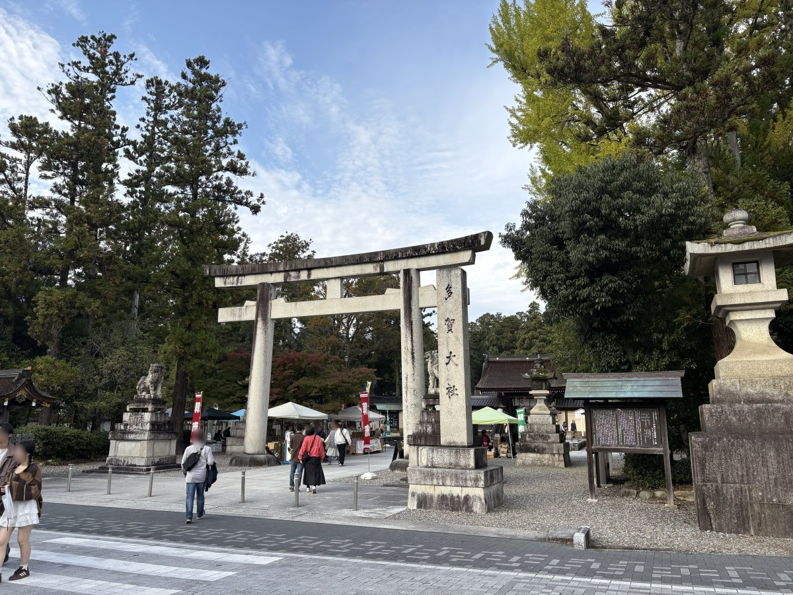

境内の入口の鳥居と社号標

多賀大社
滋賀県犬上郡多賀町多賀604
備考・犬連れでのポイント
「お多賀さん」の愛称で親しまれる、延命長寿・縁結びの古社。伊勢神宮の祭神の親神とされるイザナギ・イザナミを祀る。
全国でも珍しくペット連れ参拝を受け入れており、リードを短く持ち、マナーパンツを着用すれば屋外の境内や参道を一緒に歩ける（本殿・拝殿・授与所・待合所など建物内は不可）。
健康長寿にあやかったペット用お守りも授与。太閤秀吉が寄進したと伝わる石の反り橋（太閤橋）も見どころで、橋は竹の柵で通行止めになっていることあり。
多賀町観光駐車場（大駐車場）は観光案内所とトイレがあり、鳥居まで徒歩10分ほど。
通常は無料だが、正月の初詣期間などは有料になる場合あり。本殿裏の自動車お祓い所の一部も参拝者向けの駐車場として開放されていて、境内に直接停められるが台数は少なめ。
入口の看板は参集殿の利用者・神社関係者向けの区画で、その奥に停める。
本殿の裏手に出るため、正面の鳥居や太閤橋を通って参拝したいなら大駐車場から歩く。
運営者の訪問メモ
2026年11月1日に愛犬と訪問
運営者の愛犬、チワワのこつぶと日曜の午後に参拝し、念のためマナーパンツをはかせて境内を一緒に歩きました。境内はそれほど広くなくすぐに回れ、並んでいたのはお賽銭の列くらいで、駐車場も比較的空いていました。
掲載情報の最終確認：2026年11月25日
このスポットに行った記事（ブログ）
 お多賀さんに犬と参拝して、道の駅こうらに寄り道。滋賀・多賀町と甲良町の犬連れ日帰り
お多賀さんに犬と参拝して、道の駅こうらに寄り道。滋賀・多賀町と甲良町の犬連れ日帰り